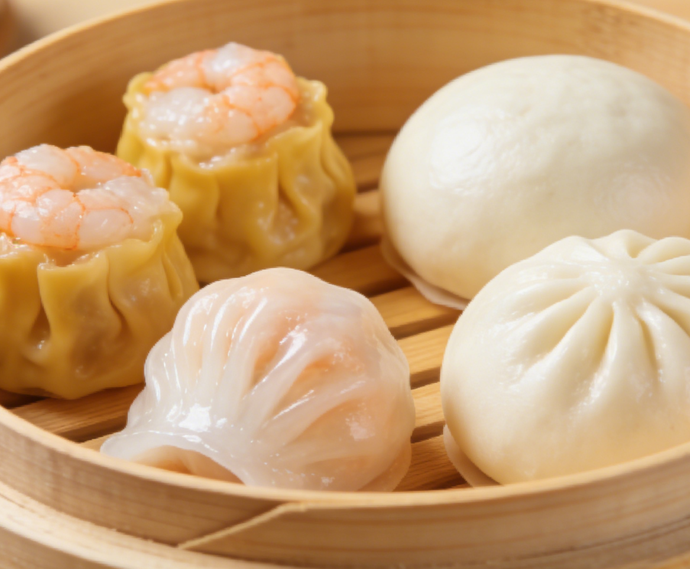
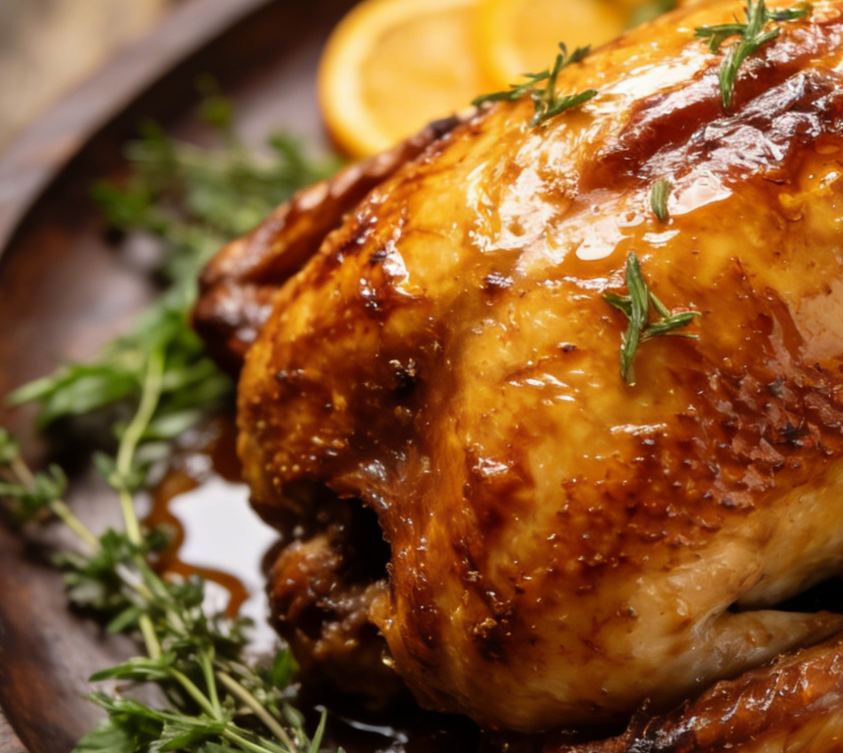
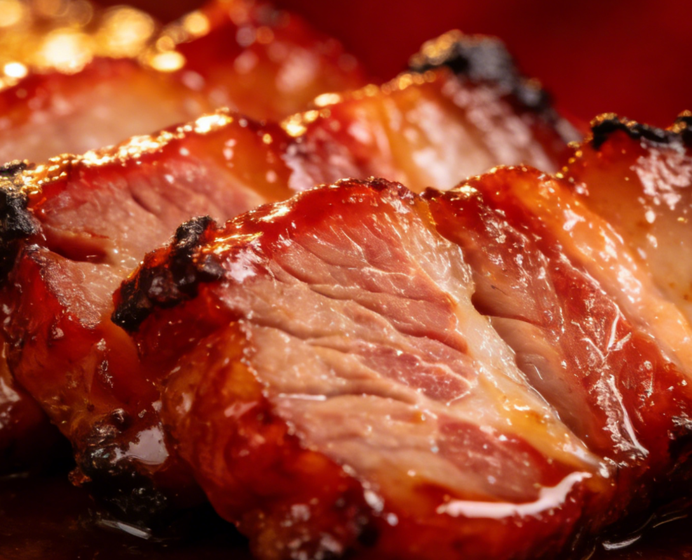
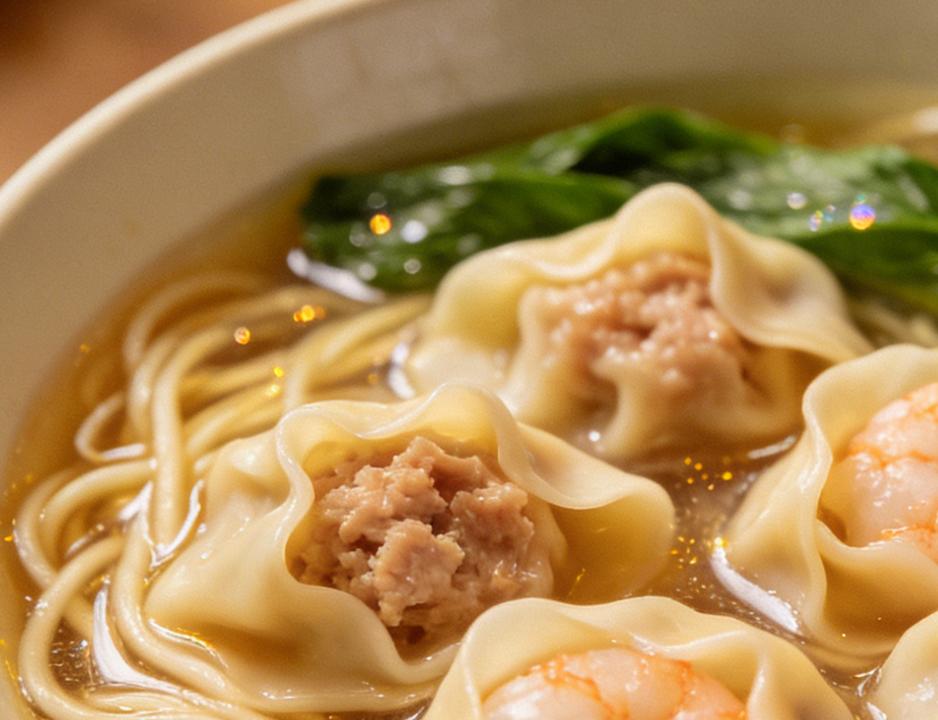
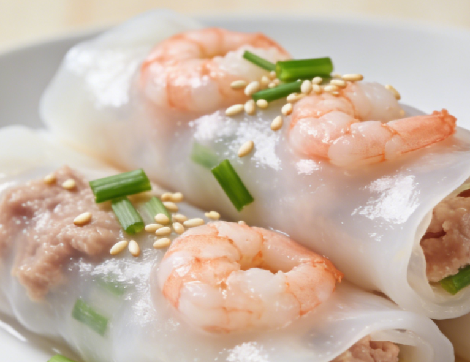
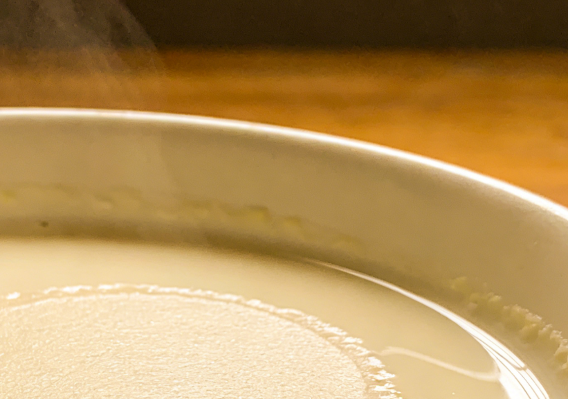

The Treasures of Cantonese Cuisine

Dim Sum
Dim sum, literally meaning "touch the heart," is the quintessential Cantonese dining experience. Originating in the teahouses of Guangzhou along the ancient Silk Road, this tradition of serving small, exquisite dishes alongside tea has been perfected over centuries. A typical dim sum spread includes dozens of varieties, from translucent shrimp dumplings (har gow) and fluffy barbecue pork buns (char siu bao) to crispy spring rolls and silky rice noodle rolls.

Roast Goose
Cantonese roast goose is a culinary masterpiece that showcases the region's mastery of fire and flavor. The whole goose is marinated in a complex blend of fermented bean paste, five-spice powder, maltose, and soy sauce, then hung in a specialized oven where it is roasted over high heat until the skin transforms into a sheet of amber-crisp perfection while the meat remains incredibly juicy and tender.

Char Siu — Cantonese BBQ Pork
Char siu, the iconic Cantonese barbecued pork, is instantly recognizable by its glossy, caramelized crimson exterior and succulent, tender interior. Cut from the fatty neck or shoulder of the pig, the meat is marinated in a sweet-savory glaze of honey, fermented red bean curd, soy sauce, hoisin sauce, and Chinese five-spice, then roasted over an open fire.

Wonton Noodles
A bowl of Cantonese wonton noodles is a study in harmony and balance. The dish consists of thin, springy egg noodles served in a clear, golden broth made from slow-simmered pork bones and dried flounder, topped with delicate wontons filled with a mixture of fresh shrimp and minced pork.

Rice Rolls — Cheong Fun
Cheong fun, or steamed rice flour rolls, are one of the most beloved staples of Cantonese breakfast cuisine. These silky, translucent sheets of steamed rice batter are filled with ingredients such as shrimp, minced beef, or barbecued pork, then rolled into elegant cylinders and drizzled with sweet soy sauce, sesame oil, and sesame seeds.

Double-Skin Milk
Double-skin milk is a silky smooth Cantonese custard dessert that originated in the city of Shunde, Guangdong. Made from just three ingredients — fresh water buffalo milk, egg whites, and sugar — this elegant dessert is prized for its incredibly tender, pudding-like texture and delicate milky sweetness.